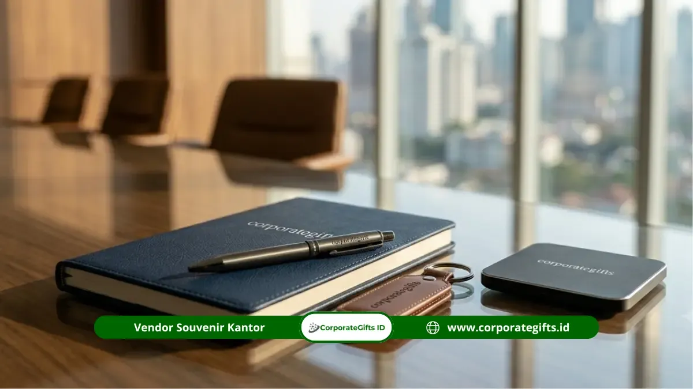

Corporate Gifts ID - Dalam ekosistem Badan Usaha Milik Negara (BUMN), proses pengadaan barang promosi, cinderamata resmi, dan souvenir kantor tidak semata-mata berbicara tentang mencari harga termurah. Cara memilih vendor souvenir BUMN yang tepat mewajibkan tim pengadaan (procurement) melakukan evaluasi ketat terhadap legalitas badan usaha, kapasitas riil manufaktur, serta kepatuhan penuh terhadap prinsip Good Corporate Governance (GCG) guna menghindari risiko temuan audit internal maupun eksternal.
Vendor yang kredibel harus mampu menjamin stabilitas mutu produk dalam jumlah ribuan unit, ketepatan jadwal pengiriman sesuai Service Level Agreement (SLA), serta kelengkapan dokumen perpajakan resmi seperti faktur pajak elektronik (e-Faktur PPN).
Poin Kunci Seleksi Vendor Pengadaan BUMN:
- Legalitas Usaha Valid: Memiliki NIB, NPWP Perusahaan aktif, PKP resmi, serta rekening bank atas nama badan usaha (PT/CV).
- Kapasitas & QC Bertingkat: Memiliki fasilitas cetak mandiri dan sistem Quality Control terstandar untuk pesanan volume tinggi.
- Kepatuhan Audit Administrasi: Transparansi rincian RAB, invoice resmi, faktur pajak PPN, dan Berita Acara Serah Terima (BAST).
- Jaminan SLA & Garansi: Menyediakan garansi penggantian produk cacat (defect replacement) dan komitmen pengiriman tepat waktu.
Urgensi Standar Pengadaan & Kepatuhan GCG di BUMN
Sebagai perusahaan milik negara, setiap rupiah anggaran yang dialokasikan dalam Rencana Kerja dan Anggaran Perusahaan (RKAP) wajib dipertanggungjawabkan secara transparan dan akuntabel. Bekerja sama dengan vendor perorangan atau penyedia ritel non-resmi memiliki risiko tinggi, mulai dari tidak tersedianya faktur pajak hingga ketidakmampuan mengganti barang yang cacat saat serah terima.
Oleh sebab itu, penerapan Standard Operating Procedure (SOP) pengadaan yang disiplin memastikan bahwa cinderamata yang dipesan mencerminkan wibawa korporat di mata para menteri, pejabat kementerian, mitra investor, dan masyarakat luas.
5 Kriteria Mutlak Evaluasi Vendor Souvenir BUMN
Sebelum menerbitkan Surat Penunjukan atau Surat Perintah Kerja (SPK), divisi pengadaan disarankan mengevaluasi 5 pilar kualifikasi berikut:
1. Legalitas Usaha dan Kepatuhan Perpajakan
Vendor wajib berbentuk badan usaha resmi berbadan hukum (PT atau CV), memiliki NIB berbasis risiko melalui sistem OSS, NPWP aktif, serta berstatus Pengusaha Kena Pajak (PKP) untuk menerbitkan e-Faktur resmi.
2. Fasilitas Produksi dan Sistem Quality Control (QC)
Pastikan vendor bukan sekadar perantara (makelar) tanpa kejelasan rantai pasok. Vendor terpercaya memiliki workshop percetakan dan pengemasan sendiri yang didukung sistem kendali mutu bertingkat guna memastikan akurasi warna logo dan kerapian jahitan.
3. Portofolio Klien Korporat & Reputasi Track Record
Memeriksa rekam jejak kerja sama masa lalu dengan instansi pemerintah, kementerian, atau BUMN lainnya. Pengalaman menangani proyek berskala ribuan pcs membuktikan kesiapan manajemen logistik dan ketahanan modal kerja vendor.
4. Transparansi Dokumen Penawaran (RAB Detail)
Vendor profesional selalu menyajikan Rincian Anggaran Biaya (RAB) yang transparan, memisahkan biaya bahan baku, biaya custom logo, ongkos kemasan, hingga estimasi pajak secara terperinci tanpa biaya siluman.
5. Kebijakan Garansi dan Layanan Purna Jual
Vendor harus bersedia menandatangani klausul garansi retur/penggantian produk cacat secara gratis dalam kurun waktu tertentu setelah barang diterima.
Tabel Komparasi Checklist Kualifikasi Vendor BUMN
Berikut matriks perbandingan antara vendor profesional standar BUMN dengan vendor ritel konvensional sebagai panduan evaluasi tim procurement:
| Parameter Evaluasi | Vendor Standar Pengadaan BUMN | Penyedia Ritel Konvensional | Dampak bagi Kepatuhan BUMN |
|---|---|---|---|
| Status Badan Usaha | PT / CV Resmi, NIB, NPWP Valid | Toko Ritel / Perorangan | Menjamin keabsahan kontrak & audit |
| Faktur Pajak (PPN/PPh) | e-Faktur PPN Resmi & Bukti Potong PPh | Nota Manual / Tanpa Pajak | Mencegah sanksi denda perpajakan |
| Approval Sampel (Dummy) | Mockup Digital & Sampel Fisik Gratis | Hanya Foto Katalog | Memastikan hasil cetak sesuai pedoman merek |
| Kapasitas & Ketepatan SLA | Sanggup 1.000 - 50.000+ Pcs Tepat Waktu | Kapasitas Terbatas, Risiko Molor | Menjamin kelancaran seremoni acara resmi |
| Ketentuan Pembayaran (TOP) | Term of Payment B2B / Invoice Resmi | Wajib Lunas di Awal (Cash Only) | Menyesuaikan alur pencairan kas RKAP |

Kelengkapan dokumentasi legalitas, faktur pajak resmi, dan kontrol kualitas ketat menjadi pilar utama kepatuhan audit BUMN.
Alur Administrasi & Dokumen Wajib Pengadaan
Setiap tahapan pengadaan merchandise perusahaan di BUMN memerlukan dokumentasi yang runut sebagai bukti pertanggungjawaban:
- Surat Permintaan Penawaran Harga (RFQ): Divisi procurement mengirimkan spesifikasi teknis, jumlah kuantiti, dan tenggat waktu pengiriman.
- Surat Penawaran Resmi & Spesifikasi Teknis: Vendor mengirimkan dokumen penawaran harga resmi (Quotation) lengkap dengan sampel digital mockup.
- Pakta Integritas: Penandatanganan komitmen bebas suap dan gratifikasi antara kedua belah pihak.
- Surat Perintah Kerja (SPK) / Purchase Order (PO): Dokumen perikatan resmi yang memuat rincian item, nilai kontrak, serta sanksi keterlambatan.
- Berita Acara Serah Terima (BAST): Dokumen penyerahan fisik barang yang ditandatangani setelah proses penghitungan dan inspeksi mutu selesai.
Strategi Beauty Contest & Negosiasi Nilai Proyek
Untuk mendapatkan efisiensi anggaran terbaik tanpa mengorbankan kualitas, tim pengadaan disarankan melakukan mekanisme beauty contest dengan membandingkan minimal 3 vendor terverifikasi.
Fokus negosiasi sebaiknya tidak hanya pada harga satuan, melainkan juga mencakup nilai tambah seperti gratis biaya pembuatan plat cetak, gratis ongkos kirim ke beberapa kantor cabang regional, serta fleksibilitas termin pembayaran (TOP).
Mitigasi Risiko Keterlambatan dan Temuan Audit
Beberapa langkah preventif yang wajib dijalankan oleh panitia pengadaan antara lain:
- Pemberian Buffer Waktu Produksi: Menetapkan tenggat waktu serah terima minimal 7 hingga 14 hari sebelum hari pelaksanaan acara.
- Inspeksi Sampel Awal (Pre-Production Sample): Mewajibkan vendor membuat 1 unit sampel fisik jadi untuk disetujui sebelum produksi massal dimulai.
- Penyimpanan Arsip Digital: Mengarsipkan seluruh dokumen e-Faktur, BAST, dan bukti transfer pembayaran dalam sistem ERP atau arsip digital cloud yang aman.
Solusi Pengadaan Souvenir BUMN dari CorporateGifts.ID
CorporateGifts.ID memiliki pengalaman panjang melayani pengadaan cinderamata resmi untuk berbagai institusi BUMN, kementerian, dan korporasi multinasional di Indonesia. Kami menyediakan legalitas perusahaan lengkap, penerbitan e-Faktur PPN resmi, sampel mockup digital gratis, serta kapasitas manufaktur handal untuk memproduksi paket seminar kit, gift set eksekutif, dan hampers korporat berkualitas prima.
Hubungi tim spesialis corporate gifting kami untuk mendapatkan penawaran resmi (RAB) dan konsultasi spesifikasi produk yang sesuai dengan standar kepatuhan instansi Anda.